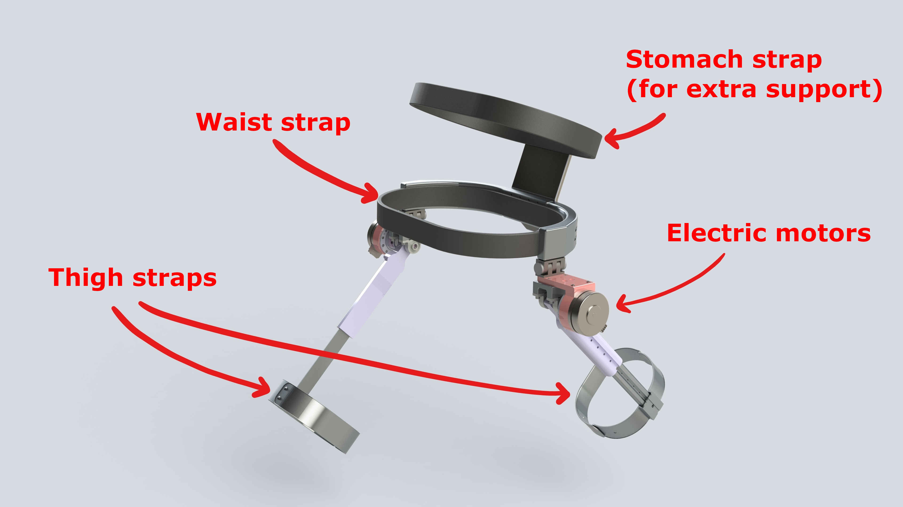

uOttawa Bionics
Co-Founder and Technical Captain
August 2017 - June 2019
I co-founded uOttawa Bionics back in 2017 with the goal of designing an exoskeleton that could be used for stroke rehabilitation. After experiencing a stroke, patients are often left with musclular atrophy and lack of coordination, often cumulating in re-learning how to walk properly. Our goal was simple; build a tool that could assist the user throughout their recovery, providing both muscular support, and gait correction. Of course, simple doesn't mean easy, or that it'll actually be simple, and it turns out that exoskeletons are both incredibly complex and involving to design! Regardless of the end state of the project, it was an excellent project to explore the complexities of engineering design and interfacing with the human body.
Contributions to the Team
While on the team, I:
- Designed, simulated and manufactured various parts, including the "arms" and motor mounts
- Wrote a PID controller to manipulate the motors
- Managed the team budget and sponsorship, and ensured milestones were met
The Value of Engineering Teams
I can't emphasize enough how much I learned from joining an engineering team. How to design for manufacturing. How to design for assembly. How to draft drawings which machinists might tolerate. How darn hard it is to build anything which interacts with the human body, let alone tries to move it. If you're in an engineering program right now, I can highly recommend finding a team of interest and, if there isn't one, starting it. Easily a highlight of my undergraduate degree.